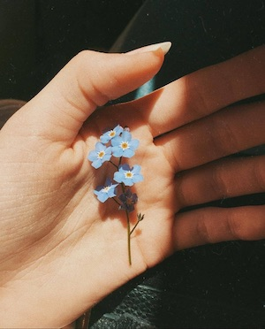
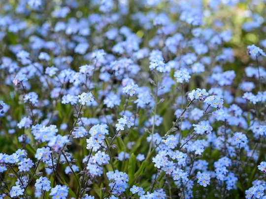

The Alpine Forget-me-not is the flower of Alaska.It is a native perennial to the north-western states and provinces of the United States and Canada. It was designated the state flower of Alaska in 1949 and thought to represent perseverance, a quality which characterized Alaska's first pioneers. It can be identified by its cluster of tiny, blue, pink or white flowers that have 5 petals on each flower. It has a weak, sleder stem.
 